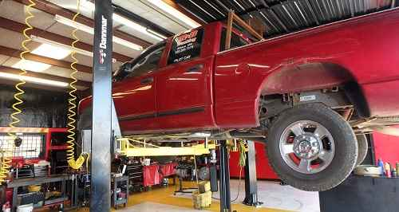

At Allison Auto Center, we understand how imperative it is to keep up with routine maintenance in order to prevent breakdowns or costly repairs. By taking preventative maintenance measures, we’ll help enhance your vehicle's lifespan. We take pride in servicing all of your vehicle’s needs. Whether it is repairing a flat tire to replacing an entire engine we are ready to help through a fast and accurate diagnosis.
- Preventative car maintenance helps prolong the life of your vehicle. We love having you visit Allison Auto Center, but we know you would rather have a reliable, working vehicle. Every manufacturer sets official maintenance guidelines for each vehicle type.
- You can check your owner’s manual to find out the recommended car maintenance schedule for your car or truck, but in general, you can follow the rules below to stay on top of your car’s health:
- Our tire rotation and balance services will keep your car driving safely and smoothly as well as extend tire life. Driving down uneven roads, hitting bumps and holes, and even long commutes can cause an imbalance in your tires and an uneven wear. Balancing and rotating your tires is an inexpensive way to reduce vibrations and wear in order to create a steadier and safer ride.
- Allison Auto Center recommends rotating your tires every 3,000 – 6,000 miles and balancing your tires every 12,000 – 15,000 miles. Rotating and aligning your tires helps ensure they are getting even wear while balancing tires helps redistribute the mass of the tire and wheel to which it is attached.

- At Allison Auto Center, we know how extreme the weather can be in New York. That’s why we recommend having your auto A/C system checked once a year, or at the first sign of complication, in order to catch minor problems before they cost you more time and money.
- Issues with your A/C are some of the most common maintenance needs you’ll encounter while owning a vehicle. These types of repairs can range from a small leak to a compressor failure. At Allison Auto Center we also recommend having your heating system checked at the first sign of complication, so if you do have a minor problem, we can catch it before it gets worse.
- Air and cabin filters are designed to capture the dirt, pollen, pollutants, and contaminants that come with day-to-day driving, keeping your vehicle running smoothly—and you breathing easy, wherever your car takes you.
- A newly replaced engine air filter helps ensure that the air burned in your engine is clean, proper airflow is maintained, and the combustion chamber doesn’t get clogged with dirt.
- At the heart of your vehicle is the car battery. It is critical for your car battery and related electrical components to operate flawlessly. Without them, your car won’t function.
- In addition to offering premium car battery services, Allison Auto Center adds the reassurance that work on your vehicle is being done by a trained professional technician.
- Schedule an appointment to have your car battery tested or replaced so it doesn’t leave you stranded when you need it the most.

Some common brake problems include:
- Grinding, Squeaking or squealing brakes
- Brake pedal feels spongy
- Shaking steering wheel
- Car wobbling or pulsating when you drive at highway speeds
- A flashing check engine light is typically indicative of a serious problem affecting your vehicle's ignition, fuel or emission systems. If your check engine light is on or flashing, it's time to come into Allison Auto Center for a car diagnostic.
- Our auto service professionals will investigate the check engine code error and troubleshoot the problem. If you delay a car diagnostic or necessary engine repair, the problems and costs can quickly escalate.
- One of the most costly repairs in the automotive industry is engine replacement. Fortunately, with proper routine maintenance, you can usually avoid this expensive problem and maintain a functioning engine.
- At Allison Auto Center, our experienced technicians take the health of your engine very seriously, in an attempt to thwart future engine malfunctions and the need for replacement.
- The exhaust system ensures toxic fumes stay out of your car cabin and works to make your engine run correctly. It also helps give you the best possible fuel efficiency and cuts emissions that pollute the air. Because the process is loud, a muffler is used to cancel out the sound.
- However, the muffler not only reduces the noise level, but also controls the back pressure of the engine. If your car’s muffler has a hole, then you can experience a carbon monoxide leak, so it’s important to fix it right away. Make sure you contact a professional exhaust shop or auto repair service, as a DIY muffler patch is never a good idea.
- Some states require regular safety inspections and/or emissions inspections on cars and trucks.
- AAC is an official emissions inspection station.
- At Allison Auto Center, we are well-equipped and trained to perform these inspections.
- Let us help you get back on the road after a DUI with an ignition interlock device (IID).
- Intoxalock is a top-rated ignition interlock provider with affordable pricing and a reliable, high quality, easy-to-use device. The Intoxalock on-site calibration station kiosk makes servicing the device fast and simple."
- Oil is the lifeblood of your engine. It reduces friction, lessens wear, provides lubrication, forms a seal between the pistons, rings and cylinder walls while helping to cool engine parts.
- Without the cleaning action of new oil, carbon and varnish build-up would be toxic to the engine.
- Some things in life are out of our control – but your steering and suspension system shouldn’t be. Having this system checked every 50,000 miles can eliminate a lot of unnecessary auto repair issues and costs – especially in relation to your safety.
- On top of that, keeping your steering and suspension maintained will keep you more comfortable while cruising down the road.
- The transmission is one of the most crucial components for ensuring the smooth and efficient operation of your vehicle. Without proper maintenance, its operation can be hindered, with noticeable effects on the quality of your ride.
- Transmission problems usually cause violent grinding noises, gear slipping, hard shifting, and other serious interruptions to your driving.
- Don't neglect your vehicle's electronic systems - trust our experts to repair your vehicle properly the first time around! A poor driving experience can often be related to a malfunctioning computer or driving controls.
- Come to Allison Auto Center to ensure your vehicle is in top driving condition.

- Whether you drive a family car or a work truck as part of a company fleet, your diesel engine needs the right service to keep performing. At Allison Auto Center, we understand the unique aspects of working on diesel engines, including the latest computerized models.
- Our specialized technicians know diesels inside and out, enabling them to provide top-of-the-line service. We equip our diesel-ready service centers with a full range of specialized equipment, from appropriately sized lifts to cutting-edge digital diagnostics.
- BrakeMate Jr. Brake Flush Machine
- Snap-On KoolKare Plus Air Conditioning Service Center
If you have any questions feel free to reach out to us at alex@allisonautocenter.com